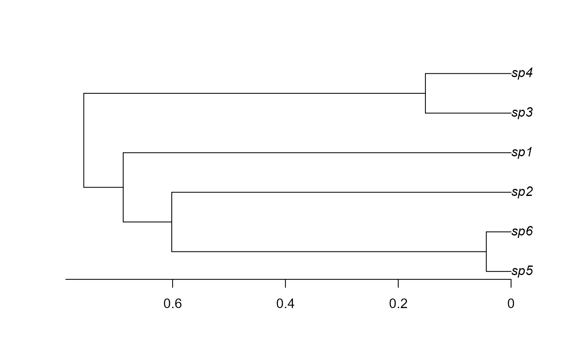
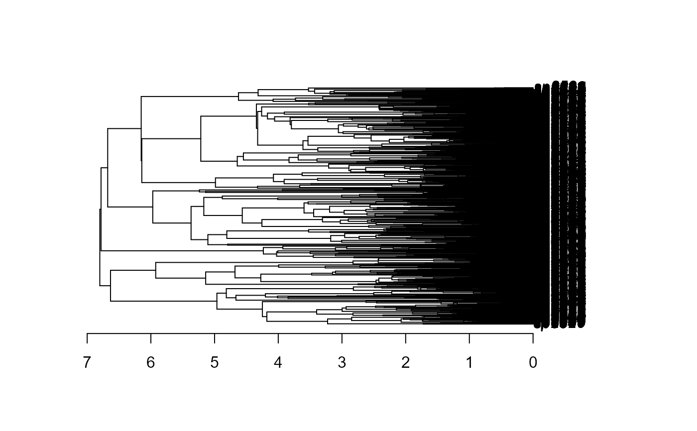

Simulating a phylogenetic trees through the birth-death process
Source:R/simulateTree.R
simulateTree.RdsimulateTree uses a birth-death process to simulate a phylogenetic
tree, following the format of ape package's phylo object. The
function is basically a wrapper for the diversitree's tree.bd
function.
Arguments
- pars
numericvector with the simulation parameters: speciation (first slot) and extinction (second slot) rates, respectively. Should follow any formats stated in the functiontree.bdfrom thediversitreepackage.- max.taxa
Maximum number of taxa to include in the tree. If
Inf, then the tree will be evolved untilmax.ttime has passed.- max.t
Maximum length to evolve the phylogeny over. If equal to
Inf, then the tree will evolve untilmax.taxaextant taxa are present.- min.taxa
Minimum number of taxa to include in the tree.
- include.extinct
A
logicalindicating if extinct taxa should be included in the final phylogeny.
Details
see help page from diversitree::tree.bd
References
Paradis, E. (2012). Analysis of Phylogenetics and Evolution with R (Vol. 2). New York: Springer.
Popescu, A. A., Huber, K. T., & Paradis, E. (2012). ape 3.0: New tools for distance-based phylogenetics and evolutionary analysis in R. Bioinformatics, 28(11), 1536-1537.
FitzJohn, R. G. (2010). Analysing diversification with diversitree. R Packag. ver, 9-2.
FitzJohn, R. G. (2012). Diversitree: comparative phylogenetic analyses of diversification in R. Methods in Ecology and Evolution, 3(6), 1084-1092.
See also
Other macroevolution:
calcFossilDivTT(),
checkAndFixUltrametric(),
countSeqDiffs(),
estimateSpeciation(),
fitCRBD(),
lttPlot(),
plotPaintedWhales(),
plotProteinSeq(),
plotRawFossilOccs(),
simulateBirthDeathRich()
Examples
S <- 1
E <- 0
set.seed(1)
phy <- simulateTree(pars = c(S, E), max.taxa = 6, max.t=Inf)
ape::plot.phylo(phy)
ape::axisPhylo()

# alternatively, we can stop the simulation using time:
set.seed(42)
phy2 <- simulateTree(pars = c(S, E), max.t=7)
ape::plot.phylo(phy2)
ape::axisPhylo()
